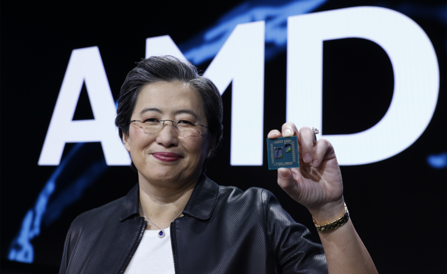

CEO de AMD y ejemplo de esfuerzo e innovación

Como presidenta y directora ejecutiva de AMD, la Dra. Lisa Su ha liderado la transformación de la empresa en la líder de la industria en informática adaptable y de alto rendimiento, que ayuda a resolver los desafíos más importantes del mundo mediante la entrega de la próxima generación de soluciones informáticas y de IA.Antes de convertirse en presidenta y CEO, se desempeñó como directora de operaciones y se encargó de integrar los equipos de las unidades de negocio, ventas, operaciones globales y habilitación de infraestructura de AMD para formar una sola empresa enfocada en el mercado que fuera responsable de todos los aspectos de la estrategia y ejecución de productos. La Dra. Su se unió a AMD en enero del 2012 como vicepresidenta sénior y gerente general de las unidades de negocio a nivel mundial. Además, estuvo a cargo de la ejecución comercial integral de los productos y soluciones de AMD.
Además de su éxito profesional, Lisa Su es una inspiración para muchas personas, sobre todo para quienes quieren estudiar carreras relacionadas con la tecnología. Su historia demuestra que con esfuerzo, dedicación y conocimiento se pueden lograr grandes cosas, sin importar los retos que se presenten.La Dra. Su trabajó 13 años en IBM ejerciendo diferentes puestos de dirección de ingeniería y negocios, incluido el cargo de vicepresidenta del Centro de Investigación y Desarrollo de Semiconductores, en el que fue responsable de la dirección estratégica de las tecnologías de sistemas de IBM, alianzas de desarrollo conjunto y operaciones de I+D de semiconductores. Antes de IBM, formó parte del personal técnico en Texas Instruments Inc. en el Centro de Procesos y Dispositivos de Semiconductores, desde 1994 hasta 1995.